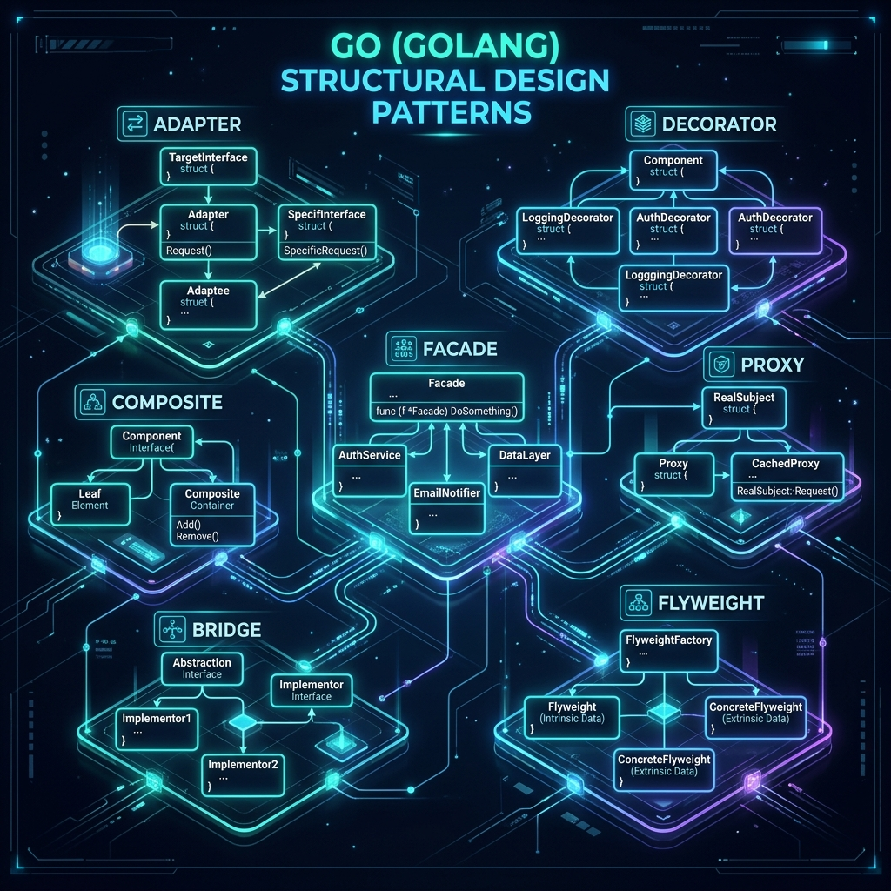
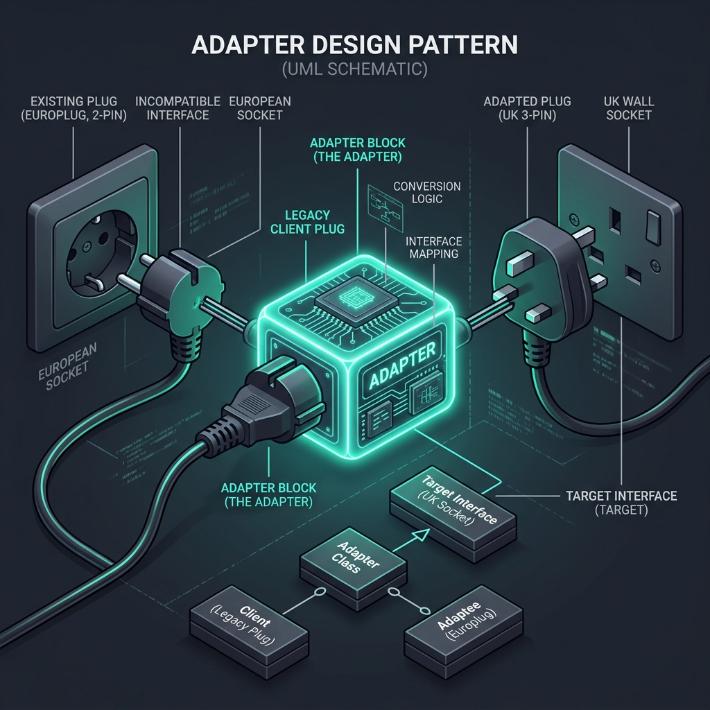
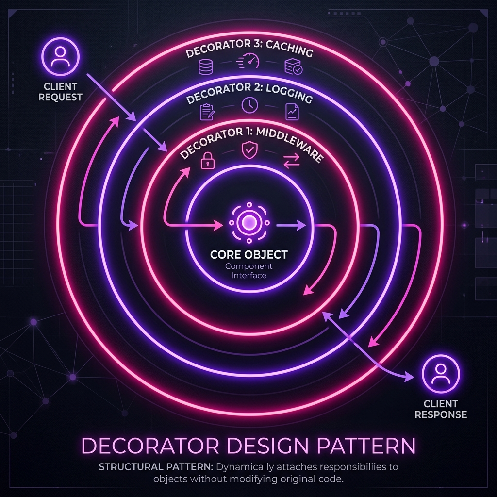
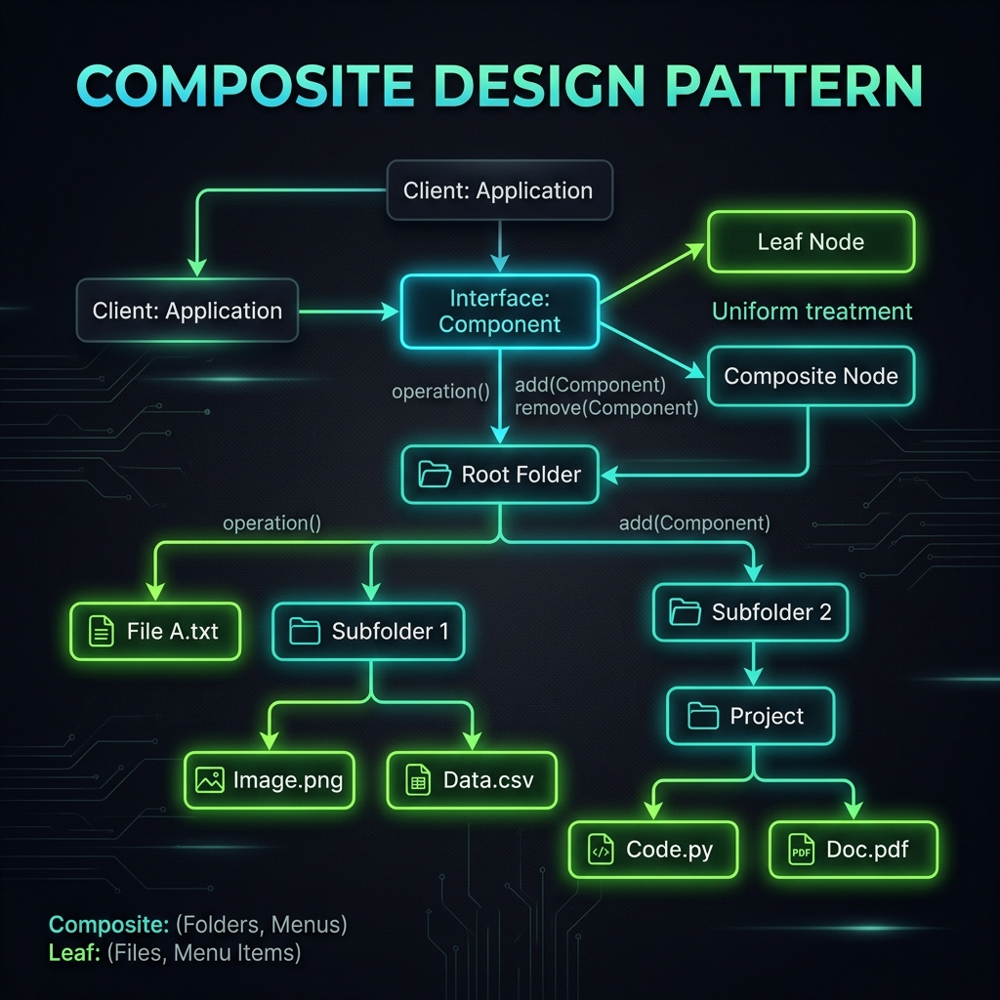
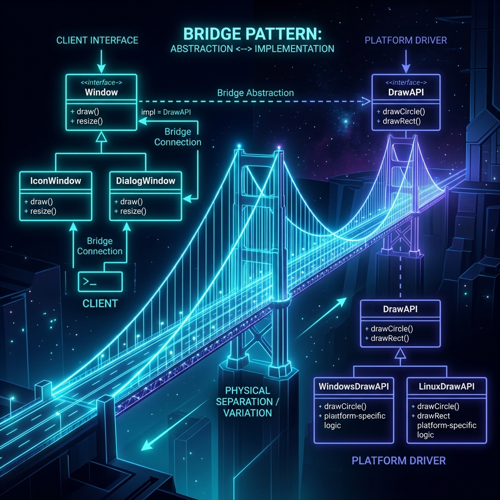

Structural Design Patterns (Mẫu thiết kế cấu trúc) là nhóm các pattern tập trung vào cách kết hợp các class và object để tạo thành cấu trúc lớn hơn, linh hoạt hơn và dễ bảo trì hơn. Chúng giải quyết bài toán: "Làm thế nào để các object hoạt động cùng nhau hiệu quả?"
Trong Go, Structural Patterns được biểu đạt qua interface composition, embedding, và struct wrapping — thay vì inheritance như Java/C++. Go's simplicity khiến các pattern này trở nên tự nhiên và idiomatic hơn bất kỳ ngôn ngữ OOP truyền thống nào.
6 Structural Patterns và vai trò
Chuyển đổi interface của một class sang interface khác mà client mong đợi. "Ổ cắm điện đa năng" — cho phép các incompatible interfaces hoạt động cùng nhau.
Thêm behavior mới vào object một cách động mà không thay đổi class gốc. "Lớp bọc ngoài" — wrap object trong wrapper cùng interface.
Cung cấp surrogate hoặc placeholder cho object khác để kiểm soát access. "Người gác cổng" — logging, caching, access control, lazy init.
Cung cấp interface đơn giản cho subsystem phức tạp. "Mặt tiền" — ẩn complexity phía sau một API gọn gàng dễ dùng.
Tổ chức object thành cấu trúc cây, cho phép treat individual và composite uniformly. "Cây thư mục" — file system, UI components.
Tách rời abstraction khỏi implementation để cả hai có thể thay đổi độc lập. "Cầu nối" — decouples what from how.
So sánh nhanh 6 Patterns
| Pattern | Mục đích chính | Khi nào dùng | Go Idiom |
|---|---|---|---|
| Adapter | Interface conversion | Tích hợp thư viện bên ngoài không tương thích | Struct wrapping interface |
| Decorator | Thêm behavior động | Middleware, logging, caching theo tầng | Struct embed interface + forward |
| Proxy | Kiểm soát access | Lazy init, auth, rate limit, caching | Struct implement same interface |
| Facade | Đơn giản hóa API | Subsystem phức tạp cần API gọn | Struct aggregating multiple services |
| Composite | Cấu trúc cây | File system, UI tree, org chart | Interface + slice of same interface |
| Bridge | Decoupling | Cross-platform, multiple implementations | Interface field trong struct |
Tất cả code trong tài liệu này được viết theo Go 1.21+, idiomatic, production-ready. Mỗi pattern có ít nhất 2 ví dụ: Advanced (pattern thuần túy) và Expert (ứng dụng thực tế trong production).
Adapter (còn gọi là Wrapper) là pattern cho phép hai interface không tương thích làm việc cùng nhau. Adapter hoạt động như một "bộ chuyển đổi" — nó wrap object từ interface cũ và expose interface mới mà client mong đợi.
Trong Go, Adapter thường được implement bằng cách tạo một struct mới chứa instance của class cũ (object adapter), implement interface mới, và delegate các method call sang class cũ. Go không cần "class adapter" vì không có inheritance.

Sơ đồ cấu trúc Adapter
Khi nào dùng Adapter?
Thư viện third-party có interface khác với interface bạn đang dùng. Adapter giúp tích hợp mà không sửa code gốc — ví dụ: wrap aws-sdk thành StorageProvider interface riêng.
Chuyển đổi dần từ hệ thống cũ sang mới. Adapter cho phép code mới dùng interface mới trong khi vẫn delegate sang implementation cũ.
Wrap external service thành interface để có thể mock trong unit test. Adapter tạo seam để inject test double.
Mỗi plugin có thể implement interface riêng, Adapter normalize chúng về một interface chung mà hệ thống hiểu được.
So sánh: Object Adapter vs Go Interface
Struct chứa adaptee field, implement target interface, forward calls. Đây là cách Go idiom nhất — composition, không inheritance.
Dùng type FuncAdapter func(...) để convert function thành interface — tương tự http.HandlerFunc. Elegant cho single-method interfaces.
Advanced: Payment Gateway Adapter
package adapter import ( "context" "fmt" "time" ) // ─── Target Interface ─────────────────────────────────────────────────────── // PaymentProcessor là interface mà ứng dụng của chúng ta sử dụng. type PaymentProcessor interface { Charge(ctx context.Context, amount float64, currency, customerID string) (string, error) Refund(ctx context.Context, transactionID string, amount float64) error GetTransaction(ctx context.Context, id string) (*Transaction, error) } type Transaction struct { ID string Amount float64 Currency string Status string At time.Time } // ─── Adaptee #1: Stripe SDK (legacy, different interface) ─────────────────── type StripeClient struct{ apiKey string } func NewStripeClient(key string) *StripeClient { return &StripeClient{apiKey: key} } func (s *StripeClient) CreateCharge(cents int64, cur, cus string) (string, error) { // Stripe dùng cents, không phải float64 return fmt.Sprintf("ch_stripe_%d", time.Now().UnixNano()), nil } func (s *StripeClient) CreateRefund(chargeID string, cents int64) error { return nil } func (s *StripeClient) RetrieveCharge(chargeID string) (map[string]any, error) { return map[string]any{"id": chargeID, "status": "succeeded", "amount": 1000}, nil } // ─── Adapter #1: Stripe → PaymentProcessor ────────────────────────────────── type StripeAdapter struct { client *StripeClient } func NewStripeAdapter(client *StripeClient) PaymentProcessor { return &StripeAdapter{client: client} } func (a *StripeAdapter) Charge(ctx context.Context, amount float64, currency, customerID string) (string, error) { // Chuyển đổi float64 → int64 cents (adaptation logic) cents := int64(amount * 100) return a.client.CreateCharge(cents, currency, customerID) } func (a *StripeAdapter) Refund(_ context.Context, txID string, amount float64) error { return a.client.CreateRefund(txID, int64(amount*100)) } func (a *StripeAdapter) GetTransaction(_ context.Context, id string) (*Transaction, error) { raw, err := a.client.RetrieveCharge(id) if err != nil { return nil, err } // Chuyển đổi map → struct (adaptation) return &Transaction{ ID: raw["id"].(string), Status: raw["status"].(string), Amount: float64(raw["amount"].(int)) / 100, At: time.Now(), }, nil } // ─── Adaptee #2: PayPal SDK ────────────────────────────────────────────────── type PayPalClient struct{ clientID, secret string } func (p *PayPalClient) ExecutePayment(amount string, cur, email string) (string, error) { return fmt.Sprintf("PAY-paypal-%d", time.Now().Unix()), nil } func (p *PayPalClient) RefundCapture(captureID string) error { return nil } // ─── Adapter #2: PayPal → PaymentProcessor ─────────────────────────────────── type PayPalAdapter struct{ client *PayPalClient } func NewPayPalAdapter(c *PayPalClient) PaymentProcessor { return &PayPalAdapter{client: c} } func (a *PayPalAdapter) Charge(_ context.Context, amount float64, currency, customerID string) (string, error) { // PayPal dùng string amount amtStr := fmt.Sprintf("%.2f", amount) return a.client.ExecutePayment(amtStr, currency, customerID) } func (a *PayPalAdapter) Refund(_ context.Context, txID string, _ float64) error { return a.client.RefundCapture(txID) } func (a *PayPalAdapter) GetTransaction(_ context.Context, id string) (*Transaction, error) { return &Transaction{ID: id, Status: "COMPLETED"}, nil } // ─── Client: Dùng PaymentProcessor interface, không biết gì về Stripe/PayPal ─ type OrderService struct { payment PaymentProcessor // chỉ biết interface } func (s *OrderService) PlaceOrder(ctx context.Context, amount float64, customerID string) error { txID, err := s.payment.Charge(ctx, amount, "USD", customerID) if err != nil { return fmt.Errorf("charge failed: %w", err) } fmt.Printf("Order placed. Transaction: %s\n", txID) return nil }
Expert: Function Adapter + Logger Interface
package adapter import ( "context" "log/slog" "go.uber.org/zap" ) // ─── Target Logger Interface ───────────────────────────────────────────────── type Logger interface { Info(msg string, fields ...any) Error(msg string, fields ...any) With(fields ...any) Logger } // ─── Adapter: zap.Logger → Logger interface ────────────────────────────────── type ZapAdapter struct{ z *zap.Logger } func NewZapAdapter(z *zap.Logger) Logger { return &ZapAdapter{z: z} } func (a *ZapAdapter) Info(msg string, fields ...any) { a.z.Sugar().Infow(msg, fields...) } func (a *ZapAdapter) Error(msg string, fields ...any) { a.z.Sugar().Errorw(msg, fields...) } func (a *ZapAdapter) With(fields ...any) Logger { return &ZapAdapter{z: a.z.Sugar().With(fields...).Desugar()} } // ─── Adapter: slog.Logger → Logger interface ───────────────────────────────── type SlogAdapter struct{ l *slog.Logger } func NewSlogAdapter(l *slog.Logger) Logger { return &SlogAdapter{l: l} } func (a *SlogAdapter) Info(msg string, fields ...any) { a.l.InfoContext(context.Background(), msg, fields...) } func (a *SlogAdapter) Error(msg string, fields ...any) { a.l.ErrorContext(context.Background(), msg, fields...) } func (a *SlogAdapter) With(fields ...any) Logger { return &SlogAdapter{l: a.l.With(fields...)} } // ─── Function Type Adapter — convert func → middleware Handler ─────────────── // Cách Go chuẩn: http.HandlerFunc là ví dụ nổi tiếng nhất. type HandlerFunc func(ctx context.Context, req any) (any, error) type Handler interface { Handle(ctx context.Context, req any) (any, error) } // HandlerFunc implements Handler — function adapter pattern func (f HandlerFunc) Handle(ctx context.Context, req any) (any, error) { return f(ctx, req) } // Sử dụng: convert anonymous function thành Handler interface func ExampleUsage() { var h Handler = HandlerFunc(func(ctx context.Context, req any) (any, error) { return fmt.Sprintf("processed: %v", req), nil }) res, _ := h.Handle(context.Background(), "hello") fmt.Println(res) // processed: hello }
Go Idiom: Trong Go, http.HandlerFunc chính là Function Adapter kinh điển nhất — convert một function có đúng signature thành http.Handler interface. Pattern này cực kỳ phổ biến trong Go ecosystem.
Decorator attach thêm responsibilities vào object một cách động, không thay đổi class gốc. Decorators implement cùng interface với object gốc, wrap nó, và thêm behavior trước/sau khi call method gốc.
Go's interface system khiến Decorator cực kỳ elegant: bất kỳ struct nào implement interface đều có thể wrap một struct khác cùng interface. Đây là nền tảng của middleware pattern phổ biến trong Go HTTP servers.

Cơ chế hoạt động — Decorator Chain
Decorator vs các giải pháp khác
- ✓Thêm/bỏ behavior runtime không cần recompile
- ✓Kết hợp nhiều behaviors linh hoạt
- ✓Single Responsibility: mỗi decorator một nhiệm vụ
- ✓Test từng decorator độc lập
- ✗Không có trong Go — không có class inheritance
- ✗Exploding class hierarchy: N features → 2^N classes
- ✗Static — phải biết combination tại compile time
- ✗Khó test từng layer riêng lẻ
Advanced: Storage Decorator Chain
package decorator import ( "context" "fmt" "log/slog" "sync" "time" ) // ─── Component Interface ───────────────────────────────────────────────────── type Storage interface { Read(ctx context.Context, key string) ([]byte, error) Write(ctx context.Context, key string, data []byte) error Delete(ctx context.Context, key string) error } // ─── Concrete Component ────────────────────────────────────────────────────── type FileStorage struct{ basePath string } func NewFileStorage(path string) Storage { return &FileStorage{basePath: path} } func (f *FileStorage) Read(_ context.Context, key string) ([]byte, error) { return []byte("data-for-" + key), nil } func (f *FileStorage) Write(_ context.Context, key string, data []byte) error { return nil } func (f *FileStorage) Delete(_ context.Context, key string) error { return nil } // ─── Decorator #1: Logging ─────────────────────────────────────────────────── type LoggingStorage struct { inner Storage // wrap bất kỳ Storage nào logger *slog.Logger } func WithLogging(s Storage, l *slog.Logger) Storage { return &LoggingStorage{inner: s, logger: l} } func (d *LoggingStorage) Read(ctx context.Context, key string) ([]byte, error) { start := time.Now() data, err := d.inner.Read(ctx, key) d.logger.InfoContext(ctx, "storage.Read", "key", key, "duration", time.Since(start), "error", err) return data, err } func (d *LoggingStorage) Write(ctx context.Context, key string, data []byte) error { start := time.Now() err := d.inner.Write(ctx, key, data) d.logger.InfoContext(ctx, "storage.Write", "key", key, "bytes", len(data), "duration", time.Since(start), "error", err) return err } func (d *LoggingStorage) Delete(ctx context.Context, key string) error { err := d.inner.Delete(ctx, key) d.logger.InfoContext(ctx, "storage.Delete", "key", key, "error", err) return err } // ─── Decorator #2: In-memory Cache ─────────────────────────────────────────── type CachedStorage struct { inner Storage mu sync.RWMutex cache map[string]cacheEntry ttl time.Duration } type cacheEntry struct{ data []byte; expiresAt time.Time } func WithCache(s Storage, ttl time.Duration) Storage { return &CachedStorage{inner: s, cache: make(map[string]cacheEntry), ttl: ttl} } func (d *CachedStorage) Read(ctx context.Context, key string) ([]byte, error) { d.mu.RLock() entry, ok := d.cache[key] d.mu.RUnlock() if ok && time.Now().Before(entry.expiresAt) { return entry.data, nil } data, err := d.inner.Read(ctx, key) if err == nil { d.mu.Lock() d.cache[key] = cacheEntry{data: data, expiresAt: time.Now().Add(d.ttl)} d.mu.Unlock() } return data, err } func (d *CachedStorage) Write(ctx context.Context, key string, data []byte) error { d.mu.Lock() delete(d.cache, key) // invalidate on write d.mu.Unlock() return d.inner.Write(ctx, key, data) } func (d *CachedStorage) Delete(ctx context.Context, key string) error { d.mu.Lock() delete(d.cache, key) d.mu.Unlock() return d.inner.Delete(ctx, key) } // ─── Decorator #3: Metrics ─────────────────────────────────────────────────── type MetricsStorage struct { inner Storage ops map[string]int64 mu sync.Mutex } func WithMetrics(s Storage) *MetricsStorage { return &MetricsStorage{inner: s, ops: make(map[string]int64)} } func (d *MetricsStorage) record(op string) { d.mu.Lock(); d.ops[op]++; d.mu.Unlock() } func (d *MetricsStorage) Read(ctx context.Context, key string) ([]byte, error) { d.record("read"); return d.inner.Read(ctx, key) } func (d *MetricsStorage) Write(ctx context.Context, key string, data []byte) error { d.record("write"); return d.inner.Write(ctx, key, data) } func (d *MetricsStorage) Delete(ctx context.Context, key string) error { d.record("delete"); return d.inner.Delete(ctx, key) } func (d *MetricsStorage) Stats() map[string]int64 { d.mu.Lock(); defer d.mu.Unlock() out := make(map[string]int64) for k, v := range d.ops { out[k] = v } return out } // ─── Wiring: Decorator Chain ───────────────────────────────────────────────── func BuildStorage(basePath string) (Storage, *MetricsStorage) { base := NewFileStorage(basePath) metrics := WithMetrics(base) cached := WithCache(metrics, 5*time.Minute) logged := WithLogging(cached, slog.Default()) // Call order: logged → cached → metrics → base return logged, metrics }
Expert: HTTP Middleware Decorator (Production Pattern)
package decorator import ( "net/http" "time" "log/slog" "strconv" ) // Middleware là function type — decorator cho http.Handler type Middleware func(http.Handler) http.Handler // Chain kết hợp nhiều middleware theo thứ tự func Chain(middlewares ...Middleware) Middleware { return func(final http.Handler) http.Handler { for i := len(middlewares) - 1; i >= 0; i-- { final = middlewares[i](final) } return final } } // ─── Decorator #1: Request Logging ─────────────────────────────────────────── func WithRequestLogging(logger *slog.Logger) Middleware { return func(next http.Handler) http.Handler { return http.HandlerFunc(func(w http.ResponseWriter, r *http.Request) { start := time.Now() rw := &responseWriter{ResponseWriter: w, statusCode: http.StatusOK} next.ServeHTTP(rw, r) logger.InfoContext(r.Context(), "request", "method", r.Method, "path", r.URL.Path, "status", rw.statusCode, "duration", time.Since(start), ) }) } } type responseWriter struct { http.ResponseWriter statusCode int } func (rw *responseWriter) WriteHeader(code int) { rw.statusCode = code; rw.ResponseWriter.WriteHeader(code) } // ─── Decorator #2: Recovery (Panic → 500) ──────────────────────────────────── func WithRecovery(logger *slog.Logger) Middleware { return func(next http.Handler) http.Handler { return http.HandlerFunc(func(w http.ResponseWriter, r *http.Request) { defer func() { if rec := recover(); rec != nil { logger.ErrorContext(r.Context(), "panic recovered", "panic", rec) http.Error(w, "Internal Server Error", http.StatusInternalServerError) } }() next.ServeHTTP(w, r) }) } } // ─── Decorator #3: Rate Limiter ─────────────────────────────────────────────── func WithRateLimit(rps int) Middleware { tokens := make(chan struct{}, rps) for i := 0; i < rps; i++ { tokens <- struct{}{} } go func() { t := time.NewTicker(time.Second) for range t.C { for i := 0; i < rps; i++ { select { case tokens <- struct{}{}:default: } } } }() return func(next http.Handler) http.Handler { return http.HandlerFunc(func(w http.ResponseWriter, r *http.Request) { select { case <-tokens: w.Header().Set("X-RateLimit-Remaining", strconv.Itoa(len(tokens))) next.ServeHTTP(w, r) default: http.Error(w, "Too Many Requests", http.StatusTooManyRequests) } }) } } // ─── Wiring ─────────────────────────────────────────────────────────────────── func BuildServer() *http.ServeMux { logger := slog.Default() mux := http.NewServeMux() mux.HandleFunc("/api", func(w http.ResponseWriter, r *http.Request) { w.Write([]byte("hello")) }) // Apply decorator chain: Recovery → RateLimit → Logging → Handler stack := Chain( WithRecovery(logger), WithRateLimit(100), WithRequestLogging(logger), ) http.ListenAndServe(":8080", stack(mux)) return mux }
Proxy cung cấp một surrogate hoặc placeholder cho object khác để kiểm soát access đến nó. Proxy implement cùng interface với Real Subject, client không phân biệt được đang dùng Real hay Proxy.
Proxy trông giống Decorator nhưng khác về intent: Decorator thêm behavior, còn Proxy kiểm soát access đến object — lazy initialization, access control, caching, remote proxy, protection.
4 loại Proxy phổ biến
Trì hoãn khởi tạo object tốn kém cho đến khi thực sự cần. Ví dụ: chỉ load image khi user scroll đến, chỉ kết nối DB khi có query đầu tiên.
Kiểm soát quyền truy cập dựa trên role, permission. Proxy check auth trước khi delegate sang real object.
Cache kết quả của expensive operations. Client không biết result đến từ cache hay real service. Khác Decorator Cache ở intent: đây về access control, không phải extension.
Đại diện cho object ở remote location. gRPC client stub chính là Remote Proxy — client gọi method như local nhưng thực ra gọi qua network.
Expert: Database Repository với Virtual + Protection + Caching Proxy
package proxy import ( "context" "errors" "fmt" "sync" "time" ) // ─── Subject Interface ─────────────────────────────────────────────────────── type UserRepository interface { FindByID(ctx context.Context, id int64) (*User, error) Save(ctx context.Context, u *User) error Delete(ctx context.Context, id int64) error } type User struct { ID int64 Name string Email string Role string } // ─── Real Subject ───────────────────────────────────────────────────────────── type PostgresUserRepo struct{ db DBConn } type DBConn interface{ QueryRow(string, ...any) *Row; Exec(string, ...any) error } type Row struct{} func (r *PostgresUserRepo) FindByID(_ context.Context, id int64) (*User, error) { return &User{ID: id, Name: "Alice", Email: "alice@example.com", Role: "user"}, nil } func (r *PostgresUserRepo) Save(_ context.Context, u *User) error { return nil } func (r *PostgresUserRepo) Delete(_ context.Context, id int64) error { return nil } // ─── Virtual Proxy: Lazy DB Connection ─────────────────────────────────────── // DB connection chỉ được tạo khi có query đầu tiên. type LazyUserRepo struct { once sync.Once inner UserRepository initFunc func() (UserRepository, error) initErr error } func NewLazyUserRepo(init func() (UserRepository, error)) UserRepository { return &LazyUserRepo{initFunc: init} } func (p *LazyUserRepo) init() error { p.once.Do(func() { p.inner, p.initErr = p.initFunc() }) return p.initErr } func (p *LazyUserRepo) FindByID(ctx context.Context, id int64) (*User, error) { if err := p.init(); err != nil { return nil, err } return p.inner.FindByID(ctx, id) } func (p *LazyUserRepo) Save(ctx context.Context, u *User) error { if err := p.init(); err != nil { return err } return p.inner.Save(ctx, u) } func (p *LazyUserRepo) Delete(ctx context.Context, id int64) error { if err := p.init(); err != nil { return err } return p.inner.Delete(ctx, id) } // ─── Protection Proxy: Role-based Access ───────────────────────────────────── type AuthContext struct{ UserID int64; Role string } type ctxKey struct{} var ErrForbidden = errors.New("forbidden: insufficient permissions") type AuthUserRepo struct{ inner UserRepository } func WithAuth(r UserRepository) UserRepository { return &AuthUserRepo{inner: r} } func getAuth(ctx context.Context) *AuthContext { auth, _ := ctx.Value(ctxKey{}).(*AuthContext); return auth } func (p *AuthUserRepo) FindByID(ctx context.Context, id int64) (*User, error) { auth := getAuth(ctx) if auth == nil { return nil, ErrForbidden } // Non-admin chỉ xem được user của mình if auth.Role != "admin" && auth.UserID != id { return nil, ErrForbidden } return p.inner.FindByID(ctx, id) } func (p *AuthUserRepo) Save(ctx context.Context, u *User) error { auth := getAuth(ctx) if auth == nil || auth.Role != "admin" { return ErrForbidden } return p.inner.Save(ctx, u) } func (p *AuthUserRepo) Delete(ctx context.Context, id int64) error { auth := getAuth(ctx) if auth == nil || auth.Role != "admin" { return ErrForbidden } return p.inner.Delete(ctx, id) } // ─── Caching Proxy ──────────────────────────────────────────────────────────── type CachingUserRepo struct { inner UserRepository mu sync.RWMutex store map[int64]*User exp map[int64]time.Time ttl time.Duration } func WithCaching(r UserRepository, ttl time.Duration) UserRepository { return &CachingUserRepo{inner: r, store: make(map[int64]*User), exp: make(map[int64]time.Time), ttl: ttl} } func (p *CachingUserRepo) FindByID(ctx context.Context, id int64) (*User, error) { p.mu.RLock() u, ok := p.store[id]; exp := p.exp[id] p.mu.RUnlock() if ok && time.Now().Before(exp) { return u, nil } u, err := p.inner.FindByID(ctx, id) if err == nil { p.mu.Lock() p.store[id] = u; p.exp[id] = time.Now().Add(p.ttl) p.mu.Unlock() } return u, err } func (p *CachingUserRepo) Save(ctx context.Context, u *User) error { p.mu.Lock(); delete(p.store, u.ID); p.mu.Unlock() return p.inner.Save(ctx, u) } func (p *CachingUserRepo) Delete(ctx context.Context, id int64) error { p.mu.Lock(); delete(p.store, id); p.mu.Unlock() return p.inner.Delete(ctx, id) } // ─── Wiring: Proxy Chain ────────────────────────────────────────────────────── func NewUserRepository() UserRepository { lazy := NewLazyUserRepo(func() (UserRepository, error) { // expensive: open DB connection return &PostgresUserRepo{}, nil }) cached := WithCaching(lazy, 5*time.Minute) secured := WithAuth(cached) return secured }
Facade cung cấp một interface đơn giản, thống nhất cho một tập hợp các interfaces phức tạp trong một subsystem. Facade định nghĩa higher-level interface giúp subsystem dễ sử dụng hơn.
Facade không ẩn subsystem — subsystem vẫn có thể được dùng trực tiếp. Facade chỉ cung cấp shortcut cho common use cases. Đây là pattern cực phổ biến trong Go để xây dựng service layer, API layer trên database/external service.
Expert: E-commerce Order Facade
package facade import ( "context" "fmt" "time" ) // ─── Subsystem 1: Inventory ────────────────────────────────────────────────── type InventoryService struct{} func (s *InventoryService) CheckAvailability(productID string, qty int) (bool, error) { fmt.Printf(" [Inventory] checking %d units of %s\n", qty, productID) return true, nil } func (s *InventoryService) Reserve(productID string, qty int) (string, error) { reserveID := fmt.Sprintf("rsv-%s-%d", productID, time.Now().Unix()) fmt.Printf(" [Inventory] reserved: %s\n", reserveID) return reserveID, nil } func (s *InventoryService) Release(reserveID string) { fmt.Printf(" [Inventory] released: %s\n", reserveID) } // ─── Subsystem 2: Payment ──────────────────────────────────────────────────── type PaymentService struct{} func (s *PaymentService) Authorize(customerID string, amount float64) (string, error) { authCode := fmt.Sprintf("auth-%d", time.Now().UnixNano()) fmt.Printf(" [Payment] authorized $%.2f for %s: %s\n", amount, customerID, authCode) return authCode, nil } func (s *PaymentService) Capture(authCode string) error { fmt.Printf(" [Payment] captured: %s\n", authCode) return nil } func (s *PaymentService) Void(authCode string) { fmt.Printf(" [Payment] voided: %s\n", authCode) } // ─── Subsystem 3: Shipping ─────────────────────────────────────────────────── type ShippingService struct{} func (s *ShippingService) CreateLabel(order string, addr string) (string, error) { trackingNo := fmt.Sprintf("TRK-%s", order) fmt.Printf(" [Shipping] label created: %s → %s\n", trackingNo, addr) return trackingNo, nil } // ─── Subsystem 4: Notification ─────────────────────────────────────────────── type NotificationService struct{} func (s *NotificationService) SendEmail(to, subject, body string) { fmt.Printf(" [Email] to=%s subject=%q\n", to, subject) } // ─── Order Result ───────────────────────────────────────────────────────────── type OrderResult struct { OrderID string TrackingNo string Status string } // ─── FACADE ─────────────────────────────────────────────────────────────────── // OrderFacade mang lại API đơn giản. Client không cần biết gì về // inventory reservation, payment authorization, shipping label creation. type OrderFacade struct { inventory *InventoryService payment *PaymentService shipping *ShippingService notification *NotificationService } func NewOrderFacade() *OrderFacade { return &OrderFacade{ inventory: &InventoryService{}, payment: &PaymentService{}, shipping: &ShippingService{}, notification: &NotificationService{}, } } // PlaceOrder — complex orchestration hidden behind one method call func (f *OrderFacade) PlaceOrder( ctx context.Context, customerID, productID, address, email string, qty int, amount float64, ) (*OrderResult, error) { orderID := fmt.Sprintf("ORD-%d", time.Now().Unix()) fmt.Printf("[OrderFacade] placing order %s\n", orderID) // Step 1: Check inventory ok, err := f.inventory.CheckAvailability(productID, qty) if err != nil || !ok { return nil, fmt.Errorf("out of stock") } reserveID, err := f.inventory.Reserve(productID, qty) if err != nil { return nil, err } // Step 2: Authorize payment (with rollback on failure) authCode, err := f.payment.Authorize(customerID, amount) if err != nil { f.inventory.Release(reserveID) // rollback return nil, fmt.Errorf("payment failed: %w", err) } // Step 3: Create shipping label trackingNo, err := f.shipping.CreateLabel(orderID, address) if err != nil { f.inventory.Release(reserveID) f.payment.Void(authCode) return nil, fmt.Errorf("shipping failed: %w", err) } // Step 4: Capture payment f.payment.Capture(authCode) // Step 5: Send confirmation f.notification.SendEmail(email, "Order Confirmed", fmt.Sprintf("Your order %s is confirmed. Tracking: %s", orderID, trackingNo)) return &OrderResult{OrderID: orderID, TrackingNo: trackingNo, Status: "confirmed"}, nil } // CancelOrder — complex cancellation hidden behind simple API func (f *OrderFacade) CancelOrder(ctx context.Context, orderID, reserveID, authCode, email string) error { f.inventory.Release(reserveID) f.payment.Void(authCode) f.notification.SendEmail(email, "Order Cancelled", "Your order has been cancelled.") return nil }
Composite tổ chức objects thành cấu trúc cây (tree structure) để represent part-whole hierarchies. Composite cho phép client treat individual objects và compositions uniformly — gọi cùng một method trên file hay folder đều hoạt động.
Trong Go, Composite được implement bằng interface chung cho cả leaf và composite nodes. Composite node chứa []Component và delegate operations xuống children. Key insight: cả leaf và composite implement cùng interface.

package composite import ( "fmt" "strings" ) // ─── Component Interface ───────────────────────────────────────────────────── // Cả File và Directory đều implement interface này. type FSNode interface { Name() string Size() int64 Print(indent int) Search(name string) []FSNode } // ─── Leaf: File ─────────────────────────────────────────────────────────────── type File struct { name string size int64 content []byte } func NewFile(name string, content []byte) *File { return &File{name: name, size: int64(len(content)), content: content} } func (f *File) Name() string { return f.name } func (f *File) Size() int64 { return f.size } func (f *File) Print(indent int) { fmt.Printf("%s📄 %s (%d bytes)\n", strings.Repeat(" ", indent), f.name, f.size) } func (f *File) Search(name string) []FSNode { if strings.Contains(f.name, name) { return []FSNode{f} } return nil } // ─── Composite: Directory ───────────────────────────────────────────────────── type Directory struct { name string children []FSNode // can hold Files or other Directories } func NewDirectory(name string) *Directory { return &Directory{name: name} } func (d *Directory) Add(node FSNode) *Directory { d.children = append(d.children, node) return d // fluent API } func (d *Directory) Name() string { return d.name } // Size() delegates to all children — recursive tree traversal func (d *Directory) Size() int64 { var total int64 for _, child := range d.children { total += child.Size() } return total } func (d *Directory) Print(indent int) { fmt.Printf("%s📁 %s/ (%d bytes)\n", strings.Repeat(" ", indent), d.name, d.Size()) for _, child := range d.children { child.Print(indent + 1) } } func (d *Directory) Search(name string) []FSNode { var results []FSNode if strings.Contains(d.name, name) { results = append(results, d) } for _, child := range d.children { results = append(results, child.Search(name)...) } return results } // ─── Usage ──────────────────────────────────────────────────────────────────── func BuildFileSystem() FSNode { root := NewDirectory("project") src := NewDirectory("src").Add( NewFile("main.go", make([]byte, 1024)), ).Add( NewFile("app.go", make([]byte, 2048)), ) docs := NewDirectory("docs").Add( NewFile("README.md", make([]byte, 512)), ) root.Add(src).Add(docs).Add(NewFile("go.mod", make([]byte, 256))) fmt.Println("=== File System Tree ===") root.Print(0) fmt.Printf("\nTotal size: %d bytes\n", root.Size()) fmt.Println("\n=== Search '.go' ===") for _, n := range root.Search(".go") { fmt.Printf("Found: %s (%d bytes)\n", n.Name(), n.Size()) } return root } // ─── Expert: Expression Tree (Composite for Math Expressions) ──────────────── type Expr interface { Evaluate() float64 String() string } type Number struct{ val float64 } func (n Number) Evaluate() float64 { return n.val } func (n Number) String() string { return fmt.Sprintf("%.g", n.val) } type BinaryOp struct { op string left Expr right Expr } func (b BinaryOp) Evaluate() float64 { l, r := b.left.Evaluate(), b.right.Evaluate() switch b.op { case "+": return l + r case "-": return l - r case "*": return l * r case "/": if r != 0 { return l / r }; return 0 } return 0 } func (b BinaryOp) String() string { return fmt.Sprintf("(%s %s %s)", b.left.String(), b.op, b.right.String()) } // Build: (3 + 4) * (10 - 5) func BuildExpression() { expr := BinaryOp{ op: "*", left: BinaryOp{op: "+", left: Number{3}, right: Number{4}}, right: BinaryOp{op: "-", left: Number{10}, right: Number{5}}, } fmt.Printf("%s = %.g\n", expr.String(), expr.Evaluate()) // (3 + 4) * (10 - 5) = 35 }
Bridge tách rời abstraction (what you do) khỏi implementation (how you do it), cho phép chúng thay đổi độc lập. Thay vì dùng inheritance để kết hợp, Bridge dùng composition.
Bài toán Bridge giải: Nếu có M abstractions và N implementations, inheritance cần M×N classes. Bridge chỉ cần M + N — abstraction struct chứa implementation interface. Ví dụ: Shape (Circle, Square) × Renderer (OpenGL, Vulkan, SVG) → không cần 6 classes, chỉ cần 5.

package bridge import ( "context" "fmt" "log" "strings" ) // ─── Implementation Interface (Implementor) ─────────────────────────────────── // Sender là implementation — cách gửi tin nhắn type Sender interface { Send(ctx context.Context, to, subject, body string) error Name() string } // ─── Concrete Implementations ───────────────────────────────────────────────── type EmailSender struct{ smtpHost string } func NewEmailSender(host string) Sender { return &EmailSender{smtpHost: host} } func (s *EmailSender) Send(_ context.Context, to, subject, body string) error { fmt.Printf("[Email via %s] To: %s\n Subject: %s\n Body: %s\n", s.smtpHost, to, subject, body) return nil } func (s *EmailSender) Name() string { return "email" } type SlackSender struct{ webhookURL string } func NewSlackSender(url string) Sender { return &SlackSender{webhookURL: url} } func (s *SlackSender) Send(_ context.Context, to, subject, body string) error { fmt.Printf("[Slack → #%s] *%s*\n%s\n", to, subject, body) return nil } func (s *SlackSender) Name() string { return "slack" } type SMSSender struct{ apiKey string } func NewSMSSender(key string) Sender { return &SMSSender{apiKey: key} } func (s *SMSSender) Send(_ context.Context, to, subject, body string) error { msg := strings.TrimSpace(subject + ": " + body) if len(msg) > 160 { msg = msg[:157] + "..." } fmt.Printf("[SMS → %s] %s\n", to, msg) return nil } func (s *SMSSender) Name() string { return "sms" } // ─── Abstraction ───────────────────────────────────────────────────────────── // Notification là abstraction — loại thông báo (what) type Notification struct { sender Sender // ← Bridge: injected implementation from string } func NewNotification(sender Sender, from string) *Notification { return &Notification{sender: sender, from: from} } // Notify — high-level operation delegating to implementation func (n *Notification) Notify(ctx context.Context, to, subject, body string) error { fullBody := fmt.Sprintf("%s\n\n-- Sent from %s via %s", body, n.from, n.sender.Name()) return n.sender.Send(ctx, to, subject, fullBody) } // ─── Refined Abstraction: UrgentNotification ───────────────────────────────── // Mở rộng abstraction mà không thay đổi implementations type UrgentNotification struct { Notification fallback Sender // backup channel nếu primary fail } func NewUrgentNotification(primary, fallback Sender, from string) *UrgentNotification { return &UrgentNotification{ Notification: *NewNotification(primary, from), fallback: fallback, } } func (u *UrgentNotification) Notify(ctx context.Context, to, subject, body string) error { urgentSubject := "🚨 URGENT: " + subject if err := u.Notification.Notify(ctx, to, urgentSubject, body); err != nil { log.Printf("primary failed, using fallback: %v", err) return u.fallback.Send(ctx, to, urgentSubject, body) } return nil } // ─── Usage: Swap implementation at runtime ──────────────────────────────────── func BridgeDemo() { ctx := context.Background() // Same notification type, different channel emailNotif := NewNotification(NewEmailSender("smtp.gmail.com"), "system") slackNotif := NewNotification(NewSlackSender("https://hooks.slack.com/..."), "system") smsNotif := NewNotification(NewSMSSender("twilio-key"), "system") for _, n := range []*Notification{emailNotif, slackNotif, smsNotif} { n.Notify(ctx, "admin", "Deployment Done", "v2.5.0 deployed to production") } // Urgent with fallback urgent := NewUrgentNotification( NewSlackSender("..."), NewSMSSender("..."), // fallback to SMS "monitoring", ) urgent.Notify(ctx, "oncall", "Production down!", "Error rate >50%") }
Bridge vs Strategy: Bridge được thiết kế tại design time để tách structure, còn Strategy được dùng tại runtime để swap behavior. Thực tế, trong Go cả hai đều trông giống nhau — struct chứa interface field. Sự khác biệt chính là intent và mức độ abstraction hierarchy.
📚 Sách kinh điển
🐙 GitHub Repositories
▶️ Video & Khóa học
📝 Bài viết chất lượng cao
Nguyên tắc vàng khi dùng Design Patterns trong Go: "Do not overuse patterns." Go khuyến khích simplicity. Chỉ áp dụng pattern khi bạn thấy rõ benefit — loose coupling, testability, extensibility. Đừng apply pattern chỉ vì "nghe hay". Bắt đầu đơn giản, refactor sang pattern khi cần.